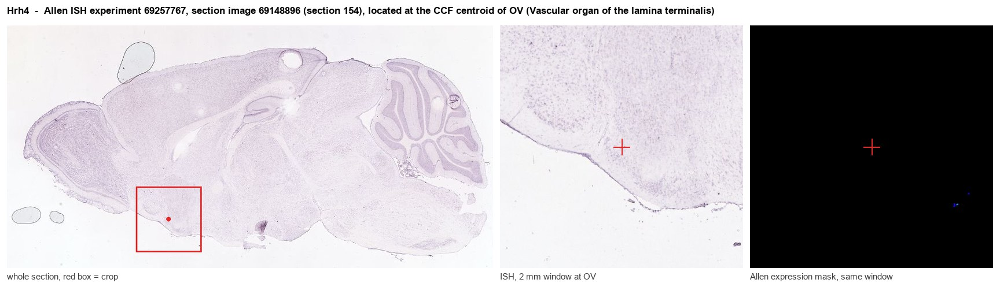
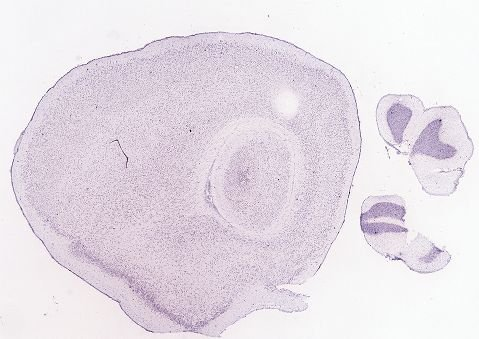
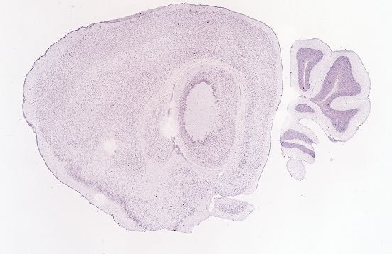
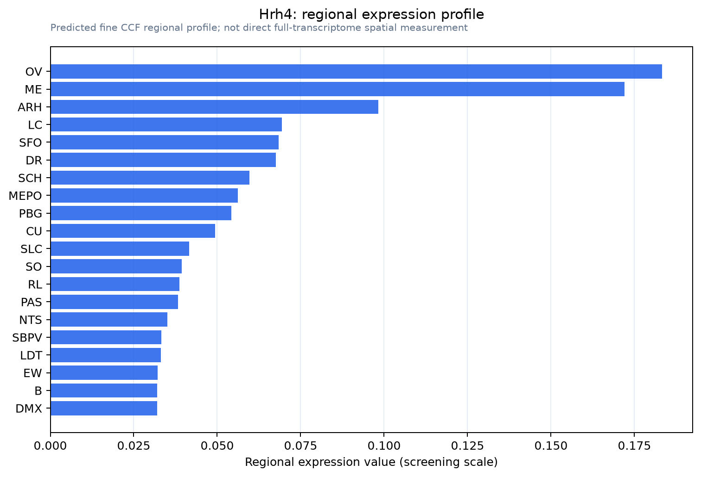

Hrh4
Histamine H4 receptor (H4R) (HH4R)
Spatial tier: STRICT_EXCLUSIVE · Class: GPCR · Top region: OV (Vascular organ of the lamina terminalis) · Positive regions: 10/554
47.1Discovery Score
36.9Targetability Score
CEvidence grade C
What this means: Hrh4: predicted fine-region profile is strict-exclusive, with 10 positive regions out of 554 (limit 12); direct spatial validation is required.
Function in OV: evidence, prediction, innovation
- Gene function
- HRH4, the fourth histamine receptor, is a Gi/o-coupled GPCR lowering cAMP and mobilising calcium. It is mainly haematopoietic (mast cells, eosinophils, basophils, dendritic cells), driving chemotaxis and cytokine release, and the main histamine-receptor drug target for itch and allergic inflammation. Central expression is low and contested.
- Region function
- The OVLT, a circumventricular organ with fenestrated capillaries, samples blood osmolality, sodium and immune and hormonal signals to drive thirst, vasopressin secretion and fever.
- Published in this region
- inferred No region-specific literature found. Closest: functional neuronal H4 in mouse brain (Connelly et al. 2009: 4-methylhistamine hyperpolarised layer IV somatosensory neurons, blocked by JNJ-10191584; immunoreactivity in thalamus, deep cortex, hippocampus) and Hrh4 transcript in rat brain endothelial cells, the dominant OVLT cell type (Karlstedt et al. 2013).
- Predicted function
- Prediction: barrier-free OVLT H4 lets circulating or mast-cell histamine act on endothelium and osmosensory neurons, linking immune activation to fluid balance and fever. Gi/o coupling predicts inhibited glutamatergic output: 4-methylhistamine or VUF8430 should blunt osmotic drinking and vasopressin release; Hrh4 knockout or JNJ-7777120 should prolong inflammation-induced fever. RNAscope must confirm expression first, as H4 antibodies are unreliable.
- Innovation
- ★★★★★ 5/5 A blood-exposed immune receptor in a barrier-free brain region is an unexamined neuroimmune interface.
- Tools
- Hrh4 knockout mice (Sanna et al. 2017); agonists 4-methylhistamine and VUF8430; antagonists JNJ-7777120, JNJ-10191584, thioperamide (non-selective); H4 antibodies criticised, RNAscope preferred; no Hrh4-Cre line.
- References
Direct evidence located at the region

Allen ISH experiment 69257767, section image 69148896 (section 154): the section that contains the CCF centroid of Vascular organ of the lamina terminalis according to the Allen image-to-atlas alignment (reference_to_image), with a 2 mm window around that point. Left: whole section, red box = window. Middle: ISH signal. Right: Allen's expression-mask view of the same window. open this image in the Allen viewer
Look it up yourself: Allen Mouse Brain ISH for Hrh4Allen reference atlas: OV (structure 763)ABC Atlas MERFISH viewer(in the ABC Atlas choose dataset MERFISH-C57BL6J-638850-CCF, colour cells by gene "Hrh4" or by parcellation_substructure "OV")All genes confined to OV + 3-D brain
Direct spatial evidence
MERFISH REGION LOCATOR

DIRECT ALLEN ISH

DIRECT ALLEN ISH

Regional expression figure

Predicted WMB × fine-CCF profile; not direct full-transcriptome spatial measurement.
Spatial profile
Evidence and specificity
- Evidence status
- PREDICTED_FINE
- Direct sources
- None; predicted localization only
- Exclusive threshold
- 12 positive regions out of 554
- Spatial specificity
- 0.372
- Top-region fraction
- 0.111
- Filter status
- PASS
Interpretation limits
- Cell-type-to-region projection is imputed expression, not direct spatial measurement.
- Adult reference atlases do not establish stability across age, sex, strain, state, or disease.
- Transcript abundance does not guarantee protein abundance or genetic-tool performance.